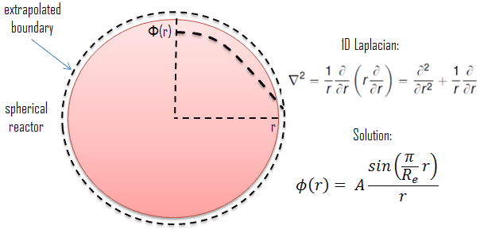
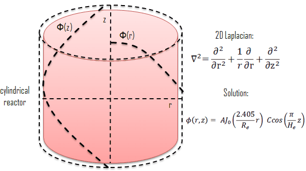
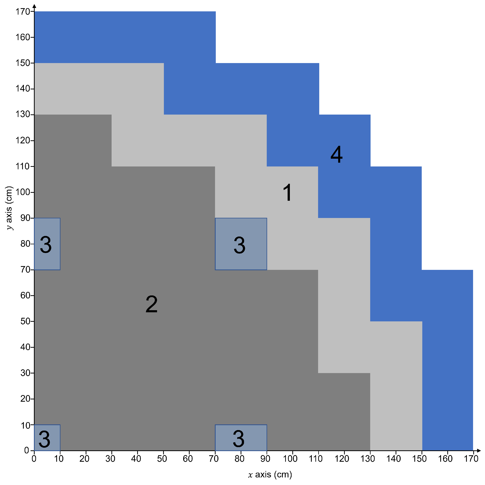
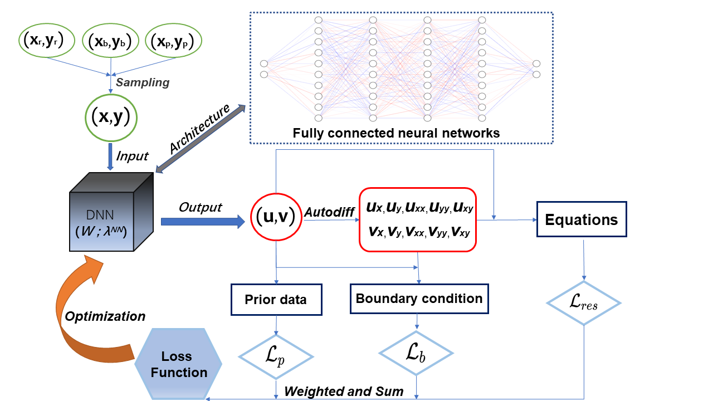
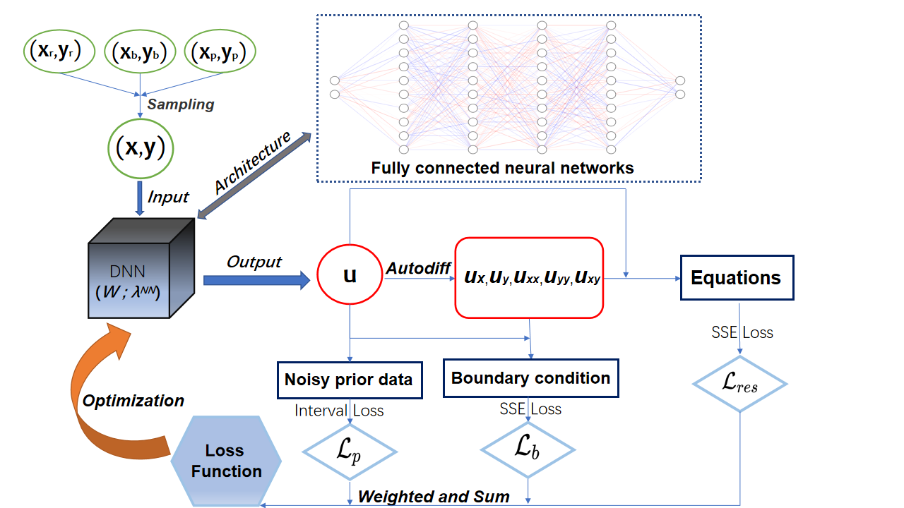
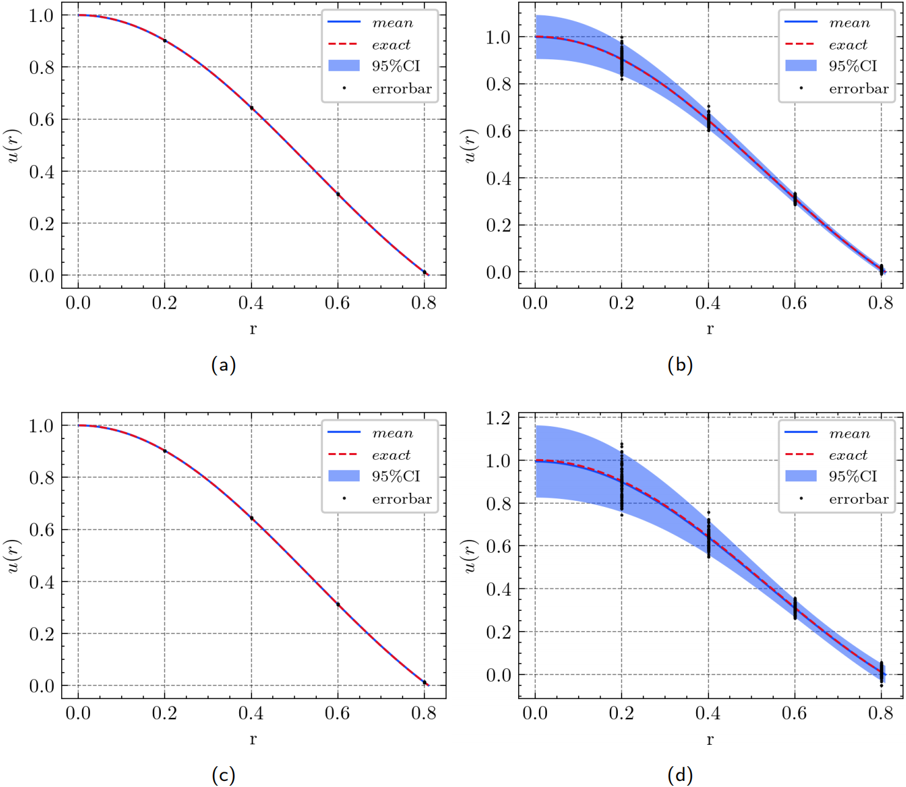
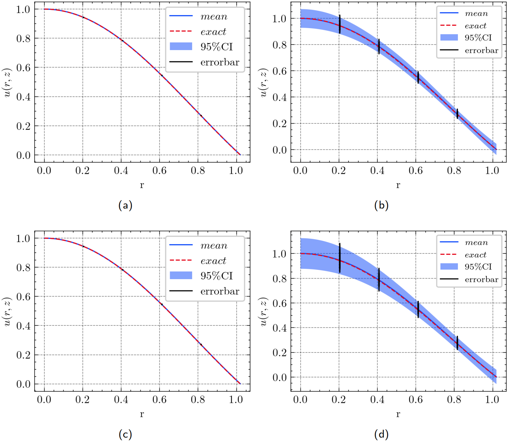
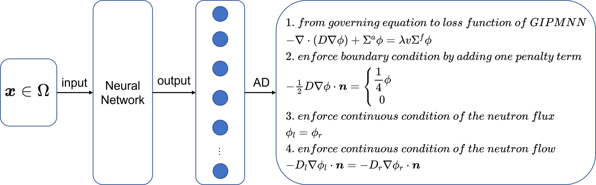
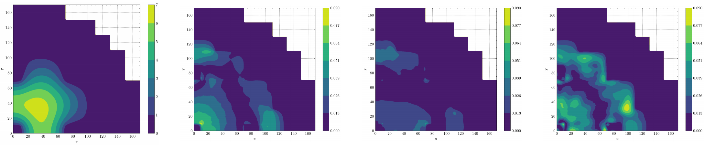

Welcome to SciNEA’s Team!¶
SciNEA: Scientific Computing for Nuclear Engineering Applications
Team Members¶
|
|||
M.S. Shupei Yu |
M.S. Xufan Chen |

Research Fields¶
Research Fields:
Scientific Computing + Maching LearningNumerical Methods of Fluid MechanicsConstruction and Analysis of High-Precision Finite Element MethodFast Algorithms for Solving Linear EquationsModel Reduction method and Machine Learning MethodsModeling and Reconstruction based on Experimental Data…
Members of the team were awarded the second prize of natural science by the Ministry of Education in 2020, undertook three research projects of the National Natural Science Foundation of China, presided over two sub-projects of the National Key Research and Development Program and one pre-research project of the installation and development, published more than 50 papers in well-known national journals such as JCP and SIAM Multiscale Model and Simulation, and granted one patent.
Recently, they have successfully completed the development of a module for 3D ground stress modelling and display of shale gas; designed an efficient pre-processing method for rapid solution of large-scale linear equation systems for subsea oil field development, improving the simulation efficiency; established a reconstruction model and algorithm based on partial observation data of reactors and fuel rods, realizing data reconstruction and inversion of physical parameters.
|

Presentations¶
|
|
|
Qihong Yang, Shiquan Zhang*, Helin Gong*, Yu Yang, Yangtao Deng, Qiaolin He, Research on iterative algorithm for eigenvalue problem of neutron diffusion equation solved by neural network, 19th Conference on Numerical Computing and Particle Transport in Reactors and Reactor Physics 2023 (CORPHY2022), Shanghai, China. |
||


Research Awards¶
Won the Second Class of Progress of Science and Technology Prize of Sichuan Province (First author). Research and development of key technologies for online monitoring system of HPR1000 reactor core 2021
Won the Second Class of Progress of Science and Technology Prize of China Nuclear Energy Association (Ninth author). Independent design research and equipment development of HPR1000 reactor core measurement system 2021
Won the China patent awards of excellence (Fourth author). A realization method of reactor LPD and DNBR online protection and monitoring 2021
Some Problems and Results¶
DEPINN: A Data-Enabled Physics-Informed Neural Network¶
 |
 |
Finite spherical reactor |
Finite cylindrical reactor |
https://www.nuclear-power.com/nuclear-power/reactor -physics/neutron-diffusion-theory/finite-spherical- reactor/ |
|
 |
The 2D IAEA Benchmark Problem (IBP) (1977) modeled by two-dimension two-group diffusion equations, which was adapted from a practical nuclear reactor. |
 |
The process of solving the 2D IBP by DEPINN. |
DEPINN: Uncertainty Analysis¶
 |
The process of solving parametric neutron diffusion eigenvalue problems containing noisy data by DEPINN. |
 |
Finite spherical reactor: prediction 𝑢 from different prior data noise scales. Interval loss is used in (a)(c) on the left, and SSE loss is used in (b)(d) on the right. (a) 𝜎 = 0.05. (b) 𝜎 = 0.05. (c) 𝜎 = 0.1. (d) 𝜎 = 0.1. |
 |
Finite cylindrical reactor: prediction 𝑢 from different prior data noise scales. Interval loss is used in (a)(c) on the left, and SSE loss is used in (b)(d) on the right. (a) 𝜎 = 0.05. (b) 𝜎 = 0.05. (c) 𝜎 = 0.1. (d) 𝜎 = 0.1. |
GIPMNN: Generalized Inverse Power Method Neural Network¶
At first, we present how to use the generalized inverse power method to solve the following Equation.
The key step we need to focus on is shown in the following Equation, where \(\mathbf{A}\) and \(\mathbf{B}\) are two matrices, \(\lambda_{k-1}\) and \(\boldsymbol{\phi}_{k-1}\) are the results of previous iteration. Therefore, \(\lambda_k\) and \(\boldsymbol{\phi}_k\) are obtained by the following Equation.
We use the neural network \(\mathcal{N}^{\theta}\) to represent the approximated eigenvector \(\Phi\). The \(\mathcal{N}^{\theta}\) is utilized to represent the neural network and the eigenfunction \(\phi\) can be denoted as \(\Phi=\mathcal{N}^{\theta}\). In GIPMNN, the following Equation is an analogue to the key code of generalized inverse power method, where \(\mathcal{L}\) and \(\mathcal{Q}\) are linear differential operators which are implemented by AD rather than specially discretized matrices. The same as the generalized inverse power method, we will record the results \(\lambda_{k-1}\) of previous iteration. One difference with the generalized inverse power method is that instead of recording \(\boldsymbol{\phi}_{k-1}\), we record \(\mathcal{Q}\Phi_{k-1}\). It is worth noting that \(\Phi_{k-1}\) is the eigenfunction represented by the neural network in \((k-1)\)-th iteration and \(\mathcal{Q}\Phi_{k-1}\) is realized by AD. In \(k\)-th iteration, we directly compute \(\Phi_{k}\) through the neural network, that is, \(\Phi_k = \mathcal{N}^{\theta}\), and calculate \(\mathcal{L}\Phi_{k}\) by AD.
Since we attain \(\Phi_k\) directly through the neural network instead of solving the equation \(\mathcal{L} \Phi_{k} = \lambda_{k-1} \mathcal{Q} \Phi_{k-1}\), we define the loss function \(Loss_{gipmnn}\) in the following Equation to propel the neural network to learn \(\Phi_k\).
When the neural network gets convergence, we obtain the smallest eigenvalue and the associated eigenfunction expressed by the neural network.
PC-GIPMNN: Physics-Constrained GIPMNN¶
 |
Illustration of PC-GIPMNN architecture diagram. There are multiple neurons in the output layer which denote the eigenfunctions in different sub-domains. |
 |
The first column shows the heatmap of the eigenfunction of FEM (the first column) and the other columns show the heatmaps of the relative error of GIPMNN (the second column), PC-GIPMNN (the third column) and DRM (the fourth column) for the 2D IAEA benchmark problem. Due to enforcing the interface conditions, PC-GIPMNN outperforms GIPMNN and DRM, as shown in the third column. |
Publications¶
DEPINN¶
Yu Yang, Helin Gong, Shiquan Zhang, Qihong Yang, Zhang Chen, Qiaolin He, Qing Li, A data-enabled physics-informed neural network with comprehensive numerical study on solving neutron diffusion eigenvalue problems, Annals of Nuclear Energy. 2023, 183: 109656,
Yu Yang, Helin Gong, Qiaolin He, Qihong Yang, Yangtao Deng and Shiquan Zhang, On the uncertainty analysis of the data-enabled physics-informed neural network for solving neutron diffusion eigenvalue problem, Nuclear Science and Engineering, 2023.
PMNN and IPMNN¶
Qihong Yang, Yangtao Deng, Yu Yang, Qiaolin He, Shiquan Zhang, Neural Networks Based on Power Method and Inverse Power Method for Solving Linear Eigenvalue Problems, Computers & Mathematics with Applications, Volume 147, 1 October 2023, Pages 14-24.
GIPMNN and PC-GIPMNN¶
Qihong Yang, Yu Yang, Yangtao Deng, Qiaolin He, Helin Gong, Shiquan Zhang, A Physics-Constrained Neural Network for Solving Discontinuous Interface K-eigenvalue Problem with Application to Reactor Physics, preprint, 2023
Cited by¶
Kim G, Heo G. Solving partial differential equation for atmospheric dispersion of radioactive material using physics-informed neural network. Nuclear Engineering and Technology, 2023, 55(6): 2305-2314.
|
|


{kind=link}
{kind=link}
{kind=link}
{kind=link}
{kind=link}
{kind=link}
{kind=link}
{kind=link}